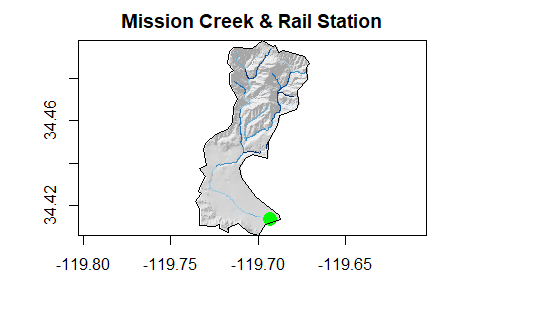

Projects
In the Summer 2020, I took an Intro GIS course using R language and software. I drafted code, completed data science projects, and improved my geospatial data skills. This is a collection of my work, and it will not cover anything outside of the course. [“Project” (Language)]
Building a project website (R)
- This assignment focused on building a static user site with Github Pages
- Includes a github repository for access to all the code involved
- The quality of work is a big step-up from my previous experience
- Completed using RStudio and R language
- Familiarizes RStudio and Github transparency
COVID-19 Pandemic (R)
- This lab breaks down NY Times data on the COVID-19 Pandemic
- It includes the use of ggplot, and data manipulation to visualize the effects of COVID on different populations
- The results expose natural spread, and the effects of preventative methods (mask, Social Distancing, etc.)
- Performing a partial COVID analysis similar to the California Department of Public Health

Distances and Projections (R)
- This journal uses simple features, USAboundaries, rnaturalearthdata to measure border distances and project border zones
- Data Wrangling
- Identifying distances
- Applying boundary lines and data to study regions
- Quantifying border zones
- Mapping border zones
- Analyzing the impacted populations at the border zone, numbers that drive policy and current events

Tesselations, Spatial Joins, Point-in-Polygon (R)
- This lab uses simple features, USABoundaries::us_counties, and rmaphshaper to create Tessellations of the continental US
- Covers Spatial Tile shaping and sizing
- Simplifying geometric point values
- Creating Funcitons to return data.frames, area, plots, and other operations
- Analyzes the risk level, age, and purpose of the 91,000 dam systems in the US (data sourced from U.S. Army Corps of Engineers)
- Completing a major, full scale dam analysis similar to ongoing efforts to monitor dam patterns and health in the USA.

Rasters and Remote Sensing (R)
- Uses raster, getlandsat, osmdata, and mapview libraries
- Analyzes flood data from Palo, Iowa (26 September 2016)
- Uses raster to stack data files
- Studies natural features/resources using bandwidth combinations from satellite images
- Implemented a remote sensing based flood analysis similar to those carried out by the NASA Earth Observatory

Terrain Analysis (R)
- Visualizes hydrological data from Mission Creek in Santa Barbara
- Determines terrain, elevation, flood, railway, and stream variation
- Attempts to highlight buildings impacted by a 2017 flood of Mission Creek
- Constructing a complete (or partial) FIM library in the same way NOAA is trying to generalize the USA using the combined National Water Model - HAND method, and companies like Azavia, NSF, and ESRI are trying to operationalize

Below are several examples of various plots, maps, graphs, etc. All visuals were created in RStudio, using ggplot and other geospatial libraries.
Continental US States Surrounding Tennesee
Regional COVID-19 Cases/Deaths

States With Most COVID Cases